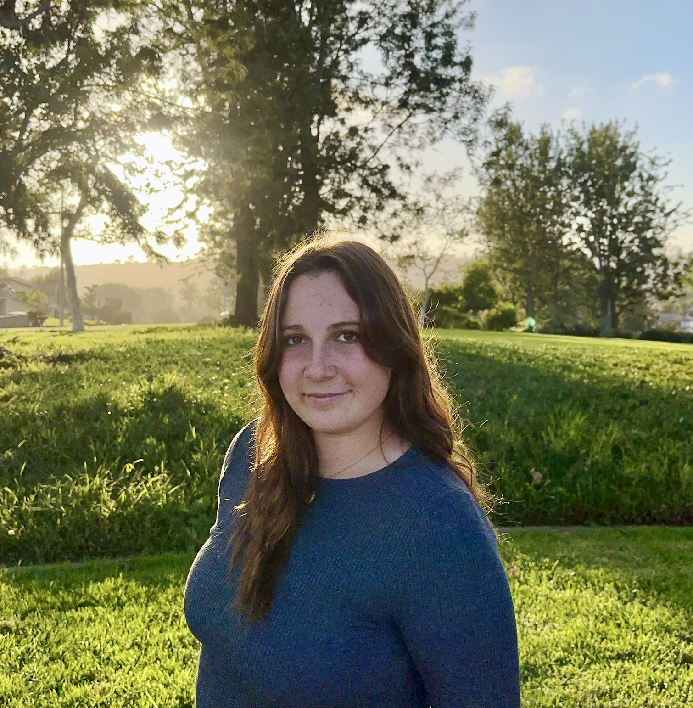

Aspiring Public Relations Strategist, Social Impact Leader & Entertainment Professional at UCLA
LinkedIn →I want to tell stories that bring attention to voices and communities that are often overlooked.
I’m interested in journalism, entertainment media, and public relations. Across these fields, I’m drawn to storytelling that centers lived experience and builds meaningful connections between media and the communities it represents. My interest in writing started with poetry. Growing up, I became increasingly aware of social inequalities around me but didn’t always know how to respond. Writing gave me a way to process those experiences and think more deeply about identity and human rights.
Today, I write as a Feature Writer for Her Campus Media at UCLA, where I contribute stories that engage readers and explore culture and community. I’m especially interested in journalism that highlights underserved communities and accurately represents their lived experiences. Through my studies, volunteer work, and writing, I’ve developed strong communication skills and an ability to build trust with the people whose stories I tell. Alongside this, I'm passionate about entertainment media and public relations because I enjoy the relationship-building and collaboration behind strong media work. The intersection of media and civic responsibility is exactly where I want to be. Ultimately, I wish to build a career centered on storytelling that informs, connects, and reflects diverse communities.
B.A. in English, Minor in Community Engagement & Social Change
Changemaker Scholar, Bruins Vote Ambassador, Special Olympics Event Planning, & Unified Basketball Volunteer.
2026 · Her Campus Media at UCLA
2026 · Her Campus Media at UCLA
2026 · Her Campus Media at UCLA
2026 · Her Campus Media at UCLA
2026 · Her Campus Media at UCLA
February 2, 2026 · Her Campus Media at UCLA
November 13, 2025 · Her Campus Media at UCLA
Supported corporate communications across broadcast announcements, executive media memos, and live press activations.
Volunteering with initiatives like Reading on the Pitch to combine sports, youth mentorship, and educational equity programs.
Exploring creative prose, canvas painting, digital storytelling, and multi-layered media production.
Developed targeted media pitches and press lists for national entertainment activations.
Compiled commercial landmark directory data for neighborhood digital storytelling platforms.
Designed hands-on learning modules and activity guides on environmental justice.